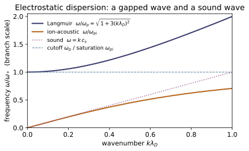
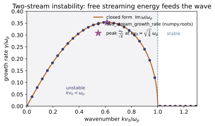
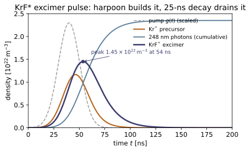

PK-01 — Kinetic Description — Distribution Functions, Vlasov & Boltzmann
Plasma & Kinetics trunk · PK/PK-01_kinetic_description · open in the Teaching Network
A plasma has far too many particles to follow one by one, yet is too collisionless for plain thermodynamics. The kinetic description tracks one smooth field: the one-particle distribution function f(x,v,t), the number of particles per unit phase-space volume, dN = f d³x d³v. Its velocity moments are the fluid quantities — number density n = ∫f d³v, mean velocity u = (1/n)∫vf d³v, and pressure p = (m/3)∫|v−u|²f d³v — and in equilibrium f is the Maxwellian. Its evolution is the Boltzmann equation ∂f/∂t + v·∇ₓf + (F/m)·∇ᵥf = (∂f/∂t)_coll; dropping the collision term and letting F be the self-consistent mean field (Lorentz force from the smoothed charge/current of f, closed by Maxwell) gives the Vlasov equation. Because the phase-space flow is incompressible, Vlasov is nothing but the continuity equation for phase-space density, df/dt = 0 along orbits — Liouville's theorem, the very law that conserves mass (~CM-22) and probability (~QM-04). The collective scales decide when this mean-field picture holds: the Debye length λ_D = √(ε₀kT/nq²) (screening), the plasma frequency ω_p = √(nq²/ε₀m) (the fastest collective rate, with λ_D = v_T/ω_p), and the plasma parameter Λ = nλ_D³, the number of particles in a Debye sphere. Λ ≫ 1 means weak coupling and collective behaviour — collisions are a slow correction (ν_ei/ω_p ∼ lnΛ/Λ ≪ 1), and the Vlasov equation is the right leading description. The collision term, restored, becomes the excimer rate chemistry of ~PK-04 and the KrF/LoKI simulator.
Key equations
Figures

![Plasma coupling parameter $\Lambda=n\lambda_D^3$ over the density–temperature plane, evaluated by the module's plasma_parameter / debye_length. $\Lambda$ counts particles in a Debye sphere: above the $\Lambda=1$ line (orange) the plasma is weakly coupled and collective, so screening is statistically meaningful and the mean-field Vlasov equation holds ($\nu_{ei}/\omega_p\sim\ln\Lambda/\Lambda\ll1$); below it is strongly coupled. The star marks the demo plasma ($n=10^{18}\,\mathrm{m^{-3}}$, $T=1$ eV, $\Lambda\approx411$). Since $\Lambda\propto T^{3/2}/\sqrt n$, hotter and thinner plasmas are more ideal.](PK/PK-01_kinetic_description/figures/fig2_plasma_coupling.svg)
Example problems
From f_M(v) = n(m/2πk_BT)^{3/2} e^{−mv²/2k_BT}, show the zeroth moment ∫f d³v = n and the second moment gives the pressure p = (m/3)∫|v|²f d³v = n k_BT, hence ⟨½mv²⟩ = (3/2)k_BT (equipartition). Remember the speed Jacobian d³v → 4πv² dv. Check: maxwellian integrated against 4πv² returns n, and p = n k_BT (test_maxwellian_zeroth_moment_is_number_density, test_maxwellian_pressure_and_energy_moments).
Put $\beta\equiv m/2k_BT$, so $f_M=n(\beta/\pi)^{3/2}e^{-\beta v^2}$ and isotropy turns $d^3v$ into $4\pi v^2\,dv$. With the Gaussian moment $\int_0^\infty v^2e^{-\beta v^2}\,dv=\tfrac14\sqrt{\pi/\beta^3}$, the zeroth moment is
The pressure uses $\int_0^\infty v^4e^{-\beta v^2}\,dv=\tfrac38\sqrt{\pi/\beta^5}$:
since $1/\beta=2k_BT/m$. The energy moment follows at once, $\int\tfrac12 mv^2 f_M\,d^3v=\tfrac32 p=\tfrac32 nk_BT$, i.e. $\langle\tfrac12 mv^2\rangle=\tfrac32 k_BT$ — equipartition (~SM-06). Numerically $\int f\,d^3v=1.0000\times10^{18}\ \mathrm{m^{-3}}=n$ and $p=1.6022\times10^{-1}\ \mathrm{Pa}=nk_BT$.
Rewrite the collisionless Boltzmann (Vlasov) equation as ∂ₜf + ∇ₓ·(vf) + ∇ᵥ·(af) = 0 and show that whenever ∇ₓ·v = 0 and ∇ᵥ·a = 0 (true for the Lorentz force) it reduces to df/dt = 0 along orbits — Liouville's theorem. Identify exactly where the divergence-free property is used. Check: vlasov_residual on a free-streamed f is ≈ 7×10⁻⁵, far below the streaming term v∂ₓf ≈ 0.18 (test_vlasov_residual_small_under_free_streaming).
Write the Vlasov equation with $\mathbf a=\mathbf F/m$ and expand each phase-space flux by the product rule:
Since $\mathbf x$ and $\mathbf v$ are independent coordinates, $\nabla_{\mathbf x}\!\cdot\mathbf v=0$; and the Lorentz acceleration $\mathbf a=\tfrac{q}{m}(\mathbf E+\mathbf v\times\mathbf B)$ has $\nabla_{\mathbf v}\!\cdot\mathbf a=0$, because $\mathbf E$ is independent of $\mathbf v$ and $\partial_{v_i}(\varepsilon_{ijk}v_jB_k)=\varepsilon_{ijk}\delta_{ij}B_k=0$. Exactly there the two extra terms drop, so the conservative form collapses to the advective one:
along the orbit $\dot{\mathbf x}=\mathbf v,\ \dot{\mathbf v}=\mathbf a$ — Liouville's theorem. Numerically, on a free-streamed $f$ the residual $\partial_t f+v\partial_x f\approx7.287\times10^{-5}$ sits far below the streaming term $v\partial_x f\approx1.814\times10^{-1}$, so phase-space continuity holds to discretization error.
For F = 0 solve ∂ₜf + v∂ₓf = 0 by characteristics to get f(x,v,t) = f₀(x − vt, v). Explain why the velocity marginal ∫f dx and the total number ∫∫f dx dv are frozen, while the density ∫f dv genuinely evolves, and why max f is unchanged (Liouville). Check: free_stream conserves the total number and ∫f dx per velocity to machine precision yet sheares f(x,v) (test_free_streaming_shears_phase_space_conserving_marginals).
With $\mathbf F=0$ each orbit conserves its velocity ($\dot v=0$), so the characteristics of $\partial_t f+v\partial_x f=0$ are the straight lines $x(t)=x_0+vt$ at fixed $v$, along which $f$ is constant:
The substitution $s=x-vt$ at fixed $v$ has unit Jacobian, so per velocity the marginal $\int f\,dx=\int f_0(s,v)\,ds$ is frozen, and with it the total number $\iint f\,dx\,dv$. But $\int f\,dv$ samples different velocities at fixed $x$ and genuinely evolves — that is the shear. And $(x,v)\mapsto(x-vt,v)$ is a measure-preserving shear that only relabels phase points, so $\max f$ is unchanged — Liouville. Numerically free_stream holds $\iint f\,dx\,dv=2.540050\times10^{3}$ and every per-velocity $\int f\,dx$ to machine precision while $f(x,v)$ visibly shears.
Linearize Poisson's equation with a Boltzmann electron response to obtain ∇²φ = φ/λ_D² and the screened potential φ(r) = (q_t/4πε₀r) e^{−r/λ_D}, with λ_D = √(ε₀k_BT/nq²). Evaluate λ_D for the representative plasma and explain why beyond λ_D a test charge is invisible. Check: debye_length(1e18, 11604.5) ≈ 7.4×10⁻⁶ m and scales as √(T/n) (test_debye_length_formula_and_scaling).
Poisson's equation for a test charge $q_t$ in the electron gas is $\nabla^2\phi=-\rho/\varepsilon_0$ with $\rho=q_t\delta(\mathbf r)+q(n_e-n)$. The electrons Boltzmann-distribute in their own potential; for $q\phi\ll k_BT$ linearize:
Away from the source this is $\nabla^2\phi=\phi/\lambda_D^2$ with $\lambda_D=\sqrt{\varepsilon_0 k_BT/nq^2}$, whose decaying point-source solution is the screened (Yukawa) potential
Beyond a few $\lambda_D$ the exponential extinguishes the field: the shielding cloud cancels the bare charge, which is then invisible. For $n=10^{18}\ \mathrm{m^{-3}}$ and $T=11604.5\ \mathrm{K}$ (with $\lambda_D\propto\sqrt{T/n}$) this gives debye_length(1e18, 11604.5) $\approx7.434\times10^{-6}\ \mathrm{m}\approx7.4\ \mu\mathrm{m}$.
Derive the plasma frequency ω_p = √(nq²/ε₀m) (rigid electron displacement) and show the Debye length equals the distance a thermal electron travels in one plasma period, λ_D = v_T/ω_p. Evaluate Λ = nλ_D³ and argue the plasma is weakly coupled. Check: debye_length equals thermal_speed/plasma_frequency, and plasma_parameter(1e18, 11604.5) ≈ 411 ≫ 1 (test_debye_equals_thermal_speed_over_plasma_frequency, test_plasma_parameter_weakly_coupled).
Displace the electron slab rigidly by $\xi$; the bared faces carry surface charge $\sigma=nq\xi$ and set up a uniform restoring field $E=\sigma/\varepsilon_0=nq\xi/\varepsilon_0$, so each electron obeys
Forming the ratio with $v_T=\sqrt{k_BT/m}$, the mass cancels:
so $\lambda_D$ is the distance a thermal electron coasts in one plasma period. Then $\Lambda=n\lambda_D^3=10^{18}(7.434\times10^{-6})^3\approx411$ particles per Debye sphere, so the nearest-neighbour Coulomb energy $\ll$ thermal energy — weakly coupled. This matches debye_length $=$ thermal_speed $/$ plasma_frequency $=7.434\times10^{-6}\ \mathrm{m}$ and plasma_parameter(1e18, 11604.5) $\approx410.8\gg1$.
The electron–ion collision rate obeys ν_ei/ω_p ∼ lnΛ/Λ. Explain why a large Debye sphere (Λ ≫ 1) makes the collisionless Vlasov equation the right leading description, with the collision term — the rare-gas-halide formation/quenching chemistry of the KrF system (Rh §4.2, §7.2; the KrF/LoKI code, ~PK-04) — a slow correction. Check (conceptual): plasma_parameter ≫ 1 ⇒ ν_ei/ω_p ≪ 1, and plasma_parameter(n, 4T) > plasma_parameter(n, T) — a hotter (or thinner) plasma is more ideal.
Two collective rates compete: the mean-field oscillation $\omega_p$ and the Coulomb collision rate $\nu_{ei}$. Many small-angle deflections across the Debye sphere accumulate to
with $\ln\Lambda$ the Coulomb logarithm (impact parameters from the distance of closest approach out to $\lambda_D$). When $\Lambda\gg1$ this ratio is $\ll1$: over one plasma period $f$ scarcely feels a collision, so the Boltzmann right-hand side is negligible and the mean-field Vlasov equation is the correct leading description — the collision term (the rare-gas-halide formation/quenching chemistry and EEDF of the KrF/LoKI system, ~PK-04) entering only as an $O(\ln\Lambda/\Lambda)$ correction. Since $\lambda_D\propto\sqrt{T/n}$ gives $\Lambda\propto T^{3/2}/\sqrt{n}$, heating or thinning raises $\Lambda$. The check bears this out: plasma_parameter $\approx411\gg1$ makes $\nu_{ei}/\omega_p\sim\ln(411)/411\approx0.015\ll1$, and plasma_parameter(n, 4T) $=4^{3/2}\Lambda=8\Lambda$ exceeds plasma_parameter(n, T) — a hotter (or thinner) plasma is more ideal.
Run the worked code: cd PK/PK-01_kinetic_description/code && python3 kinetic_description.py
PK-02 — Fluid & MHD Description — Moments, Continuity & Momentum
Plasma & Kinetics trunk · PK/PK-02_fluid_mhd · open in the Teaching Network
A plasma is either followed kinetically (the distribution function $f$ of ~PK-01) or described as a fluid of smooth fields. The bridge is taking velocity moments of the Vlasov/Boltzmann equation: integrating against $1,\mathbf v,\mathbf{vv},\dots$ collapses phase space onto $n$, $\mathbf u$ and the pressure $\mathsf P$. The $0^\text{th}$ moment is the continuity equation ∂n/∂t + ∇·(nu) = 0 — the same local conservation law as mass, charge and probability (KEY BRIDGE B2); the $1^\text{st}$ moment is the momentum equation m n(∂u/∂t + u·∇u) = −∇·P + qn(E+u×B). The hierarchy is never closed (each moment needs the next — the closure problem), so one truncates with a polytropic equation of state p = Cρ^γ. Summing the two-fluid equations under quasineutrality gives ideal MHD: ρ Du/Dt = −∇p + J×B, the ideal Ohm's law E+u×B = 0, and the induction equation ∂B/∂t = ∇×(u×B) with its frozen-in flux. Three characteristic speeds organize the dynamics — sound c_s = √(γp/ρ), Alfvén v_A = B/√(μ₀ρ), and fast magnetosonic √(c_s²+v_A²) — and the ratio of thermal to magnetic pressure, the plasma β = p/(B²/2μ₀), says whether the field or the gas is in charge. The code recovers (n, u, nk_BT) from a drifting Maxwellian by numerical moment integration, then evaluates all the speeds and β for a magnetized plasma.
Key equations
Figures
![MHD characteristic speeds for a fixed plasma ($n=10^{19}\,$m$^{-3}$, $T\approx100\,$eV, $\gamma=\tfrac53$) versus magnetic field $B$, from sound_speed, alfven_speed and fast_magnetosonic_speed. The Alfven speed $v_A\propto B$ rises out of the constant sound speed $c_s$; the fast magnetosonic speed $v_{\mathrm{fast}}=\sqrt{c_s^2+v_A^2}$ tracks $c_s$ in the gas-dominated regime ($\beta>1$, dotted line) and merges onto $v_A$ once the field takes over ($\beta<1$). Crossover $v_A=c_s$ at $\beta=2/\gamma$.](PK/PK-02_fluid_mhd/figures/fig1_mhd_speeds_beta.svg)

Example problems
For f(v) = n(m/2πk_BT)^{3/2} exp[−m|v−u|²/2k_BT], evaluate the first three velocity moments and show they return ∫f d³v = n (0th), (1/n)∫vf d³v = u (1st), and (m/3)∫|v−u|²f d³v = nk_BT (the scalar pressure, 2nd). Why does the 2nd central moment give p = nk_BT for any drift u? Check: moments_of_maxwellian(1e19, (1e5,0,0), 1e5, M_P) returns n = 1.0×10¹⁹, u_x = 1.0×10⁵, and p = 13.8 Pa = n·K_B·T.
Answer: 0th → $n$, 1st → $\mathbf u$, 2nd central → $p=nk_BT$ (drift-independent).
Shift to the comoving (random) velocity $\mathbf w=\mathbf v-\mathbf u$, where $f=n(m/2\pi k_BT)^{3/2}e^{-mw^2/2k_BT}$ is an isotropic Gaussian. The 0th moment is just the normalized Gaussian,
since $\int e^{-mw^2/2k_BT}\,d^3w=(2\pi k_BT/m)^{3/2}$. The 1st moment splits as $\mathbf v=\mathbf u+\mathbf w$; the $\mathbf w$ part is an odd integrand and drops, so $\frac1n\int\mathbf v f\,d^3v=\mathbf u+\langle\mathbf w\rangle=\mathbf u$. The 2nd central moment uses the per-axis variance $\langle w_i^2\rangle=k_BT/m$,
It is drift-independent because the central moment is measured about $\mathbf u$ — subtracting the bulk motion leaves only the thermal spread, which is precisely what pressure is. Hence the code returns $n=1.0\times10^{19}$, $u_x=1.0\times10^{5}$, and $p=nk_BT=13.8$ Pa.
~CM-22Integrate the Vlasov equation over v and show the force term vanishes (boundary terms at |v|→∞), leaving ∂n/∂t + ∇·(nu) = 0. Identify which conserved density this is in ~CM-22 (mass) and ~QM-04 (probability) — KEY BRIDGE B2. Check: for a rigidly advected bump ρ = exp[−(x−ut)²], continuity_residual(rho0, rho1, u, dx, dt) is ≈ 3×10⁻³, far below the ≈ 0.43 size of ∂ρ/∂t itself.
Answer: $\partial_t n+\nabla\cdot(n\mathbf u)=0$; the conserved density is mass in ~CM-22, probability in ~QM-04.
Integrate the Vlasov equation $\partial_t f+\mathbf v\cdot\nabla_x f+\frac{\mathbf F}{m}\cdot\nabla_v f=0$ over $d^3v$. The first term is $\int\partial_t f\,d^3v=\partial_t n$. In the second, $\mathbf v$ is an independent coordinate, so it passes through the spatial gradient, $\int\mathbf v\cdot\nabla_x f\,d^3v=\nabla\cdot\!\int\mathbf v f\,d^3v=\nabla\cdot(n\mathbf u)$. The force is divergence-free in velocity ($\nabla_v\cdot(\mathbf E+\mathbf v\times\mathbf B)=0$), so $\mathbf F\cdot\nabla_v f=\nabla_v\cdot(\mathbf F f)$ is a pure velocity-space divergence and converts to a surface integral that vanishes as $f\to0$ at infinity,
What survives is the continuity equation,
This is the same local law $\partial_t(\text{density})+\nabla\cdot(\text{flux})=0$ carried by mass in ~CM-22 (density $\rho$) and probability in ~QM-04 (density $|\psi|^2$) — KEY BRIDGE B2; only the conserved density changes. For the rigid bump $\rho=e^{-(x-ut)^2}$ the finite-difference residual is $\approx3\times10^{-3}$, far below the $\approx0.43$ size of $\partial\rho/\partial t$ itself.
Take the v-weighted moment to get m n(∂u/∂t + u·∇u) = −∇·P + qn(E+u×B), and explain why the hierarchy never closes (continuity needs u, momentum needs P, …). Apply the polytropic closure p = Cρ^γ with γ = (N+2)/N: what is γ for 1-D adiabatic plasma-wave compression (N = 1), and for a 3-D monatomic plasma? Check: the closure fixes the sound speed; sound_speed(5/3, 1e19K_B1.16e6, 1e19*M_P) ≈ 1.26×10⁵ m/s (and the pressure input is the p = nk_BT recovered in P1).
Answer: $\gamma=3$ for 1-D ($N=1$) compression, $\gamma=5/3$ for a 3-D monatomic ($N=3$) plasma.
Multiply Vlasov by $m\mathbf v$ and integrate. The inertial terms give $\partial_t(mn\mathbf u)+\nabla\cdot(mn\langle\mathbf{vv}\rangle)$ with $\langle\mathbf{vv}\rangle=\mathbf u\mathbf u+\mathsf P/(mn)$, and the Lorentz term gives $qn(\mathbf E+\mathbf u\times\mathbf B)$. Expanding the derivatives and using continuity to cancel the $\mathbf u\,[\partial_t n+\nabla\cdot(n\mathbf u)]$ piece collapses the inertia to the convective form,
The hierarchy never closes: continuity (for $n$) needs $\mathbf u$, momentum (for $\mathbf u$) needs the 2nd moment $\mathsf P$, the pressure equation would need the 3rd-moment heat flux $\mathbf q$, and so on. Truncate polytropically, $p=C\rho^\gamma$ with $\gamma=(N+2)/N$: 1-D plasma-wave compression has $N=1\Rightarrow\gamma=3$, a 3-D monatomic plasma $N=3\Rightarrow\gamma=5/3$. This $\gamma$ fixes the sound speed; with $\gamma=5/3$ and $p=nk_BT$ from P1,
matching sound_speed(5/3, 1e19K_B1.16e6, 1e19*M_P) $\approx1.263\times10^5$ m/s.
Compute c_s = √(γp/ρ) and v_A = B/√(μ₀ρ) for the plasma above and show c_s ≪ v_A — the field is far "stiffer" than the gas here. By what factor does v_A change if the density quadruples? Check: sound_speed(5/3, 1e19K_B1.16e6, 1e19M_P) ≈ 1.26×10⁵ m/s and alfven_speed(1.0, 1e19M_P) ≈ 6.90×10⁶ m/s (ratio v_A/c_s ≈ 55); alfven_speed(1.0, 41e19M_P) is half of alfven_speed(1.0, 1e19*M_P).
Answer: $c_s\approx1.26\times10^5$, $v_A\approx6.90\times10^6$ m/s ($v_A/c_s\approx55$); quadrupling $\rho$ halves $v_A$.
With $\gamma=\frac53$, $p=nk_BT\approx160$ Pa and $\rho=nm_p\approx1.67\times10^{-8}$ kg/m³, the two speeds are
Their ratio is $v_A/c_s\approx55$, so $c_s\ll v_A$: magnetic tension is far stiffer than the gas here — the same verdict as $\beta\ll1$ in P6. Because $v_A\propto\rho^{-1/2}$, quadrupling the density multiplies $v_A$ by $1/\sqrt4=\tfrac12$. This matches sound_speed(...) $\approx1.26\times10^5$ m/s and alfven_speed(1.0, 1e19M_P) $\approx6.90\times10^6$ m/s (ratio $\approx55$), with alfven_speed(1.0, 41e19M_P) exactly half of alfven_speed(1.0, 1e19M_P).
For propagation k ⊥ B, gas pressure and magnetic pressure restore the wave together, giving v_fast = √(c_s² + v_A²). Show v_fast ≥ max(c_s, v_A), and that it reduces to c_s when B → 0 and to v_A when p → 0. Check: fast_magnetosonic_speed(1.263e5, 6.898e6) ≈ 6.90×10⁶ m/s = √(c_s²+v_A²), only marginally above v_A because c_s ≪ v_A here.
Answer: $v_{\text{fast}}=\sqrt{c_s^2+v_A^2}\ge\max(c_s,v_A)$; $\to c_s$ as $B\to0$, $\to v_A$ as $p\to0$.
For $\mathbf k\perp\mathbf B$ a compression squeezes the gas and the field together, so gas pressure and magnetic pressure restore the wave in parallel and their squared speeds add, $v_{\text{fast}}=\sqrt{c_s^2+v_A^2}$. Since both terms are non-negative,
with equality only when the other speed vanishes: $B\to0\Rightarrow v_A\to0\Rightarrow v_{\text{fast}}\to c_s$ (pure sound), and $p\to0\Rightarrow c_s\to0\Rightarrow v_{\text{fast}}\to v_A$ (pure compressional Alfvén). Numerically
only a hair above $v_A$ because $c_s^2/v_A^2\approx(1/55)^2\approx3\times10^{-4}$. This matches fast_magnetosonic_speed(1.263e5, 6.898e6) $\approx6.90\times10^6$ m/s $=\sqrt{c_s^2+v_A^2}$.
Define the magnetic pressure P_B = B²/2μ₀ and the plasma β = p/(B²/2μ₀) = nk_BT/(B²/2μ₀). Compute both for the plasma above; is it magnetically or gas-pressure dominated? How does β scale with B? (A KrF discharge/e-beam plasma, Rh, is essentially unmagnetized — β ≫ 1 — so the fluid momentum balance there is pressure- and collision-driven, not J×B.) Check: magnetic_pressure(1.0) ≈ 3.98×10⁵ Pa and plasma_beta(1e19, 1.16e6, 1.0) ≈ 4.0×10⁻⁴ ≪ 1 (magnetically dominated); β ∝ 1/B², so doubling B gives β ≈ 1.0×10⁻⁴.
Answer: $P_B\approx3.98\times10^5$ Pa, $\beta\approx4.0\times10^{-4}\ll1$ (magnetically dominated); $\beta\propto1/B^2$.
The magnetic pressure is
while the gas pressure is $p=nk_BT\approx160$ Pa. Their ratio is the plasma beta,
so the plasma is magnetically dominated — the field pressure beats the gas pressure by a factor $\sim1/\beta\approx2500$. With $p$ fixed and $P_B\propto B^2$, the beta scales as $\beta\propto1/B^2$, so doubling $B$ drops it to $\beta/4\approx1.0\times10^{-4}$. (A KrF discharge/e-beam plasma, by contrast, is essentially unmagnetized, $\beta\gg1$, so its momentum balance is set by pressure and collisions, not $\mathbf J\times\mathbf B$.) This matches magnetic_pressure(1.0) $\approx3.98\times10^5$ Pa and plasma_beta(1e19, 1.16e6, 1.0) $\approx4.0\times10^{-4}\ll1$, with $\beta\approx1.0\times10^{-4}$ after doubling $B$.
Run the worked code: cd PK/PK-02_fluid_mhd/code && python3 fluid_mhd.py
PK-03 — Plasma Waves & Instabilities — Langmuir, Ion-Acoustic, Landau Damping
Plasma & Kinetics trunk · PK/PK-03_waves_instabilities · open in the Teaching Network
A plasma responds to any disturbance with collective fields, so it carries a family of electrostatic waves set by two scales — the plasma frequency ω_p = √(n e²/ε₀m_e) and the Debye length λ_D = √(ε₀k_BT/n e²) = v_th/ω_p. Langmuir (electron plasma) waves ring near ω_p with a warm pressure correction, the Bohm–Gross relation ω² = ω_p² + 3k²v_th² (cold limit ω→ω_p). Ion-acoustic waves are the plasma's sound, ω = k c_s/√(1+k²λ_D²) with c_s = √(k_BT_e/m_i), going to ω≈k c_s at long wavelength. Two effects have no acoustic analogue and need the kinetic (Vlasov, ~PK-01) picture: Landau damping, a collisionless loss to particles resonant at the phase velocity v=ω/k (rate ∝ ∂f₀/∂v there; a falling Maxwellian damps, γ<0), computed by deforming the velocity integral onto the Landau contour (~MA-06); and the two-stream instability, where two counter-streaming beams give a rising resonant slope and the wave grows instead (Im ω>0 for kv₀<ω_p, peak γ_max = ω_p/√8). This module makes all four quantitative and checks the cold/long-wavelength limits, the damping sign, and the unstable band.
Key equations
Figures


Example problems
From the slab-displacement restoring field, derive ω_p = √(n e²/ε₀m_e), and from thermal screening derive λ_D = √(ε₀k_BT/n e²). Show the identity λ_D = v_th/ω_p (one thermal step per plasma period) with v_th = √(k_BT/m). Check: plasma_frequency(1e18, e, m_e) ≈ 5.64e10 rad/s; debye_length(1e18, 1e4, e) ≈ 6.90e-6 m equals thermal_speed(1e4, m_e)/ω_p.
Pull a slab of electrons aside by $x$; the exposed surface charge $\sigma=nex$ makes a parallel-plate field $E=\sigma/\varepsilon_0=nex/\varepsilon_0$, so every electron feels a linear restoring force,
Screening is the static cousin: linearizing Boltzmann electrons $n=n_0e^{e\phi/k_BT}\approx n_0(1+e\phi/k_BT)$ in Poisson's equation gives $\nabla^2\phi=\phi/\lambda_D^2$ with
For $n=10^{18}\,\mathrm{m^{-3}}$ and $T=10^4\,$K this gives $\omega_p=5.64\times10^{10}\,$rad/s and $\lambda_D=6.90\times10^{-6}\,$m, equal to $v_{th}/\omega_p$ with $v_{th}=3.89\times10^5\,$m/s — matching plasma_frequency and debye_length.
Show the warm-electron pressure (1-D adiabatic, γ=3) turns the cold oscillation into the propagating wave ω² = ω_p² + 3k²v_th² = ω_p²(1+3k²λ_D²). Confirm the cold limit ω→ω_p as k→0 and that the wave is always above cutoff. Check: bohm_gross with k=0.01/λ_D gives ω/ω_p ≈ 1.0001; with k=0.5/λ_D gives ω/ω_p ≈ 1.323; ω(k)² equals ω_p²+3(k v_th)² exactly.
Linearize the warm-electron fluid about a uniform background: continuity $\partial_t n_1+n_0\partial_x u=0$, momentum $m n_0\partial_t u=-en_0E-\partial_x p_1$, and Poisson $\varepsilon_0\partial_x E=-en_1$, closed by the 1-D adiabatic law $p_1=3k_BT\,n_1$ ($\gamma=3$ for one compressional degree of freedom). Eliminating $u,E,p_1$ for a plane wave $e^{i(kx-\omega t)}$ collapses them to a single wave equation,
using $v_{th}=\omega_p\lambda_D$. As $k\to0$ the pressure term dies and $\omega\to\omega_p$ (the cold cutoff); since $3k^2\lambda_D^2\ge0$ the wave always rides above $\omega_p$. Numerically $k\lambda_D=0.01$ gives $\omega/\omega_p=\sqrt{1+3(0.01)^2}\approx1.0001$ and $k\lambda_D=0.5$ gives $\sqrt{1+3(0.25)}=\sqrt{1.75}\approx1.323$, matching bohm_gross.
Treating electrons as a Boltzmann fluid and ions as inertia, derive ω = k c_s/√(1+k²λ_D²) with c_s = √(k_BT_e/m_i). Show ω≈k c_s (non-dispersive sound) for k λ_D≪1, that the phase speed ω/k decreases with k, and that ω saturates at the ion plasma frequency ω_pi = c_s/λ_D as kλ_D→∞. Check: ion_acoustic at small k λ_D gives ω/k = c_s; at large k λ_D it tends to plasma_frequency(n, e, m_i) ≈ 1.32e9 rad/s.
On the slow ion timescale the light electrons stay Boltzmann-distributed, $n_{e1}/n_0=e\phi/k_BT_e$, while cold ions carry the inertia. Ion momentum $m_i(-i\omega)u=-ike\phi$ and continuity $-i\omega n_{i1}+ikn_0u=0$ give $n_{i1}=n_0ek^2\phi/(m_i\omega^2)$; substituting both densities into Poisson $-\varepsilon_0k^2\phi=-e(n_{i1}-n_{e1})$ yields
Solving for $\omega$ and using $\omega_{pi}\lambda_D=\sqrt{k_BT_e/m_i}=c_s$,
For $k\lambda_D\ll1$ this is non-dispersive sound $\omega\simeq kc_s$; the phase speed $\omega/k=c_s/\sqrt{1+k^2\lambda_D^2}$ falls as $k$ grows; and for $k\lambda_D\gg1$ it saturates at $\omega\to c_s/\lambda_D=\omega_{pi}$. That ceiling is plasma_frequency(n, e, m_i)$\approx1.32\times10^9\,$rad/s, the large-$k\lambda_D$ limit that ion_acoustic approaches.
Argue that particles resonant at v=ω/k exchange energy with the wave, so the rate is set by ∂f₀/∂v there; a falling Maxwellian (∂_v f₀<0) gives net loss, γ<0. Evaluate the closed form γ/ω_p = −√(π/8)(kλ_D)⁻³ exp(−1/2(kλ_D)²−3/2) and explain why it is exponentially weak for kλ_D≪1. Check: landau_damping_rate gives γ<0 with γ/ω_p ≈ −0.020, −0.096, −0.151 at kλ_D = 0.3, 0.4, 0.5 (|γ| grows with kλ_D), and < 10⁻⁴ in magnitude at kλ_D = 0.15.
A particle at the phase velocity $v=\omega/k$ sees a nearly static field and trades energy resonantly — those just slower than the wave gain, those just faster lose — so the net rate tracks the slope of $f_0$ there (notes §5), $\gamma=\tfrac{\pi}{2}(\omega_p^3/k^2)\,\partial_v f_0|_{\omega/k}$. For a Maxwellian $f_0\propto e^{-v^2/2v_{th}^2}$ the slope $\partial_v f_0=-(v/v_{th}^2)f_0$ is negative, so $\gamma<0$ — loss. Setting $v=\omega/k$ with the Bohm–Gross $\omega^2=\omega_p^2(1+3k^2\lambda_D^2)$ puts the exponent at $-\tfrac{v^2}{2v_{th}^2}=-\tfrac{1}{2(k\lambda_D)^2}-\tfrac32$, and the prefactor collapses via $\tfrac{\pi}{2}/\sqrt{2\pi}=\sqrt{\pi/8}$ and $\omega_p^4/(k^3v_{th}^3)=\omega_p(k\lambda_D)^{-3}$ to
It is exponentially weak for $k\lambda_D\ll1$ because the resonance $v\approx v_{th}/k\lambda_D$ then sits far on the tail where almost no particles live. This returns $\gamma/\omega_p\approx-0.020,-0.096,-0.151$ at $k\lambda_D=0.3,0.4,0.5$ and $|\gamma|/\omega_p<10^{-4}$ at $k\lambda_D=0.15$, matching landau_damping_rate.
For two cold beams at ±v₀ (each density n/2), write 1 = ½ω_p²[1/(ω−kv₀)²+1/(ω+kv₀)²], clear to the bi-quadratic ω⁴−(2a+ω_p²)ω²+(a²−ω_p²a)=0 with a=(kv₀)², and show the lower root ω²<0 (a growing mode) exactly when kv₀<ω_p. Check: two_stream_growth_rate is >0 for kv₀ = 0.5ω_p and exactly 0.0 for kv₀ = 1.5ω_p (outside the band).
Multiply through by $(\omega-kv_0)^2(\omega+kv_0)^2=(\omega^2-a)^2$ with $a=(kv_0)^2$, using $(\omega+kv_0)^2+(\omega-kv_0)^2=2(\omega^2+a)$:
This is a quadratic in $\omega^2$ whose discriminant simplifies to $\omega_p^2(8a+\omega_p^2)$:
The lower ($-$) root is negative iff $(2a+\omega_p^2)^2<\omega_p^2(8a+\omega_p^2)$, which reduces to $4a^2<4a\omega_p^2$, i.e. $a<\omega_p^2$ — exactly $kv_0<\omega_p$. There $\omega^2<0$ makes $\omega=i\gamma$ a purely growing mode. So two_stream_growth_rate is $>0$ at $kv_0=0.5\,\omega_p$ (inside the band) and clips to $0.0$ at $kv_0=1.5\,\omega_p$ (outside).
Maximize the growth rate Im ω = √(−ω²) over k inside the band and show the peak is γ_max = ω_p/√8 ≈ 0.354 ω_p, reached at kv₀ = √(3/8) ω_p ≈ 0.612 ω_p. Why is the fastest-growing wavelength comparable to v₀/ω_p (the beam's "Debye-like" scale)? Check: scanning two_stream_growth_rate over k, the maximum of Im ω/ω_p is ≈ 0.354 = 1/√8 at kv₀/ω_p ≈ 0.612.
Inside the band the growing root of P5 gives $\gamma^2=-\omega^2=\tfrac12\big[\omega_p\sqrt{8a+\omega_p^2}-(2a+\omega_p^2)\big]$, $a=(kv_0)^2$. Maximize over $a$:
so $kv_0=\sqrt{3/8}\,\omega_p\approx0.612\,\omega_p$. Substituting back,
The peak sits at $k\sim\omega_p/v_0$, i.e. wavelength $\lambda\sim v_0/\omega_p$ — the beam's "Debye-like" length (how far a beam particle drifts in one plasma period): shorter modes have $kv_0>\omega_p$ and fall outside the band, longer ones couple weakly. Scanning two_stream_growth_rate reproduces $\mathrm{Im}\,\omega/\omega_p\approx0.3536=1/\sqrt8$ at $kv_0/\omega_p\approx0.612$.
Both damping and growth come from the same kinetic dielectric function ε(k,ω) = 1 − (ω_p²/k²)∫_L ∂_v f₀/(v−ω/k) dv = 0, evaluated on the Landau contour (~MA-06). Explain how the sign of ∂f₀/∂v at the resonance selects Landau damping (Maxwellian, falling slope) versus the two-stream instability (counter-streaming beams, rising slope between them). (Conceptual — connect the §5 and §6 code: the beam in P5 is just an f₀ with positive slope where the Maxwellian of P4 has negative slope.)
On the Landau contour the resonant denominator splits by the Plemelj rule, $1/(v-\omega/k)\to\mathrm{P.V.}\,1/(v-\omega/k)-i\pi\,\delta(v-\omega/k)$, so the dielectric function acquires an imaginary part fixed by the residue at the resonance:
Writing $\omega=\omega_r+i\gamma$ and solving $\varepsilon=0$ to first order gives $\gamma=-\operatorname{Im}\varepsilon/(\partial_\omega\!\operatorname{Re}\varepsilon)\propto \partial_v f_0|_{\omega/k}$: the growth rate inherits the sign of the slope at $v=\omega/k$. A single-hump Maxwellian falls for all $v>0$, so the resonance lands on a negative slope and the wave damps (P4); two counter-streaming beams instead carve a valley at $v=0$ with a rising slope between them, and a mode with $\omega/k$ in that gap meets $\partial_v f_0>0$ and grows (P5–P6). Same residue, opposite sign — the two-stream $f_0$ is just the Maxwellian's falling slope flipped upward where the resonant particles sit.
Run the worked code: cd PK/PK-03_waves_instabilities/code && python3 plasma_waves.py
PK-04 — Atomic & Molecular Kinetics — Rate Equations, Excimer Chemistry & EEDF
Plasma & Kinetics trunk · PK/PK-04_atomic_molecular_kinetics · open in the Teaching Network
A laser-pumped gas is a coupled set of rate equations $\dot n_i=\sum$(production)$-\sum$(loss) for every species, with each reaction weighted by a rate coefficient. For electron-impact processes that coefficient is an EEDF average, $k=\langle\sigma v\rangle=\int\sigma v\,f\,d^3v$, and for a threshold cross-section the Maxwellian average collapses to the Arrhenius form $k\propto e^{-E_{\rm th}/kT}$ — the activation energy is the cross-section threshold. In equilibrium detailed balance between ionization and recombination fixes the Saha ionization fraction, which climbs from neutral to fully ionized with temperature. The capstone is a 0-D KrF\ excimer scheme — electron-impact pump, harpooning $\mathrm{Kr}^+\mathrm{F_2}\to\mathrm{KrF}^+\mathrm{F}$, radiative decay $\mathrm{KrF}^\to\mathrm{Kr}+\mathrm{F}+h\nu$ at 248 nm, and F₂ quenching — integrated as a stiff ODE system in which KrF\* rises to a peak then decays while the heavy-particle (atom) inventories are conserved exactly. Because the lower $(\mathrm{Kr}+\mathrm{F})$ state is repulsive, emission is bound–free and the inversion (hence 248 nm gain, ~QO-03) is automatic. This is the teaching distillation of the repo's phantom11 simulator: a 26-element log-packed state vector, LoKI/EEDF swarm tables, and run_sim → build_rhs_u → rhs_u.
Key equations
Figures


Example problems
Write the rate equations for the 0-D cartoon (pump → Kr\, harpoon Kr\ + F₂ → KrF\ + F, radiative KrF\ → Kr + F + hν, F₂ quench). Identify the limiting reagent, and argue that KrF\ is quasi-steady, n(KrF\) ≈ R₂/(A + k_q n(F₂)), so it tracks the formation rate and rises to a peak then decays once the pump (and Kr\) drain away. Check: simulate_krf() gives peak_KrFs ≈ 1.45×10²² m⁻³ at peak_time ≈ 54 ns, with KrF\ at the final time < 10 % of the peak; excimer_rhs is literally production − loss.
With $r_1=k_{\rm pump}\,g(t)\,n_{\rm Kr}$ (pump), $r_2=k_h\,n_{\rm Kr^}n_{\rm F_2}$ (harpoon), $r_3=A\,n_{\rm KrF^}$ (radiative) and $r_4=k_q\,n_{\rm KrF^*}n_{\rm F_2}$ (quench), the ledger $\dot n_i=$ production $-$ loss is
$\mathrm{F_2}$ is the limiting reagent: it starts at $2\times10^{23}\ \mathrm{m^{-3}}$ (vs $10^{24}$ for Kr), is consumed by harpooning and never refilled. KrF\* has a fast total loss rate $A+k_q n_{\rm F_2}\sim10^{8}\ \mathrm{s^{-1}}$ (an effective lifetime of tens of ns), much faster than the pump envelope, so it sits in quasi-steady state:
tracking the instantaneous formation rate $r_2\propto g(t)\,n_{\rm Kr^}$. While the Gaussian pump fills Kr\, $r_2$ climbs; once the pump passes and Kr\ drains, $r_2$ collapses and KrF\ follows it down. So KrF\ rises to a peak then decays — simulate_krf() gives peak_KrFs $\approx1.45\times10^{22}\ \mathrm{m^{-3}}$ at peak_time $\approx54$ ns, with the final KrF\ far below 10 % of the peak, and excimer_rhs is literally production minus loss.
~SM-06From the 3-D Maxwellian and ε = ½mv², derive k = ⟨σv⟩ = √(8/πm) (kT)^{−3/2} ∫₀^∞ σ(ε) ε e^{−ε/kT} dε. For a step cross-section σ = σ₀ for ε ≥ E_th, integrate to get k = σ₀⟨v⟩(1 + E_th/kT) e^{−E_th/kT}. Check: rate_coefficient_maxwellian(T, 3e-20, 12.0) equals rate_coefficient_step_closed_form(...) to < 10⁻⁵ relative, and the coefficient increases with T (test_rate_coefficient_matches_closed_form).
Average the flux $\sigma v$ over the Maxwellian $f(\mathbf v)=(m/2\pi kT)^{3/2}e^{-mv^2/2kT}$; for an isotropic cross-section $d^3v=4\pi v^2\,dv$, so
Substituting $\varepsilon=\tfrac12 mv^2$ (so $v^3\,dv=2\varepsilon\,d\varepsilon/m^2$) collapses the prefactor to $\sqrt{8/\pi m}\,(kT)^{-3/2}$:
For the step $\sigma=\sigma_0$ above $E_{\rm th}$ the integral runs from $E_{\rm th}$, and $\int_{E_{\rm th}}^\infty\varepsilon\,e^{-\varepsilon/kT}\,d\varepsilon=(kT)^2(1+E_{\rm th}/kT)e^{-E_{\rm th}/kT}$, so with $\langle v\rangle=\sqrt{8kT/\pi m}$
This closed form reproduces the numeric energy integral: rate_coefficient_maxwellian(T, 3e-20, 12.0) equals rate_coefficient_step_closed_form(...) to $\sim10^{-8}$ (well under $10^{-5}$) relative, both rising with $T$.
~SM-06Show that the apparent Arrhenius activation energy E_a = −d(ln k)/d(1/kT) of the step-σ result is ≈ E_th − ½kT, i.e. just below the threshold, so k(T) is Arrhenius-like k ∝ e^{−E_th/kT}. Check: for E_th = 15 eV, the slope of ln k between 12 000 and 14 000 K gives an apparent E_a of 0.85–1.0 × E_th (test_rate_coefficient_apparent_activation_energy); arrhenius(T, A, Ea) recovers its input Ea exactly from any two temperatures.
Take the log of the closed form and differentiate with respect to $\beta\equiv1/kT$. Since $k=\sigma_0\sqrt{8/\pi m}\,(kT)^{1/2}(1+E_{\rm th}/kT)e^{-E_{\rm th}/kT}$,
The apparent activation energy is
For $E_{\rm th}\gg kT$ the middle term $\to kT$, leaving
just below threshold — so $k\propto e^{-E_{\rm th}/kT}$ is Arrhenius with $E_a\simeq E_{\rm th}$. Numerically, for $E_{\rm th}=15$ eV the slope of $\ln k$ between 12 000 and 14 000 K gives $E_a\approx14.5$ eV $=0.97\,E_{\rm th}$ (inside the 0.85–1.0 band), while arrhenius(T, A, Ea) returns its input $E_a$ exactly because $\ln\!\big(Ae^{-E_a/kT}\big)$ is exactly linear in $1/kT$.
Balance ionization A → A⁺ + e against recombination A⁺ + e → A to derive the Saha relation n_e n_i/n₀ = (2g_i/g₀)(2πm_e kT/h²)^{3/2} e^{−E_ion/kT}. With n_e = n_i and n₀ = n_tot − n_i, solve the quadratic for the ionization fraction x = n_i/n_tot. Check: saha_ionization_fraction(T, 1e24, 14.0) rises from ≈ 0.02 (10⁴ K) to ≈ 0.99 (3×10⁴ K), → 1 when hot and → 0 when cold (test_saha_fraction_bounded_and_monotonic); the factor 2 is the electron spin.
Detailed balance equates the ionization rate $A\to A^++e$ with the recombination rate $A^++e\to A$; in equilibrium the populations obey the Saha relation
where $(2\pi m_e kT/h^2)^{3/2}$ is the electron quantum concentration (inverse thermal-de-Broglie volume) and the factor $2$ counts the two electron spin states. Put $n_e=n_i$, $n_0=n_{\rm tot}-n_i$, and let $x=n_i/n_{\rm tot}$, $R=S/n_{\rm tot}$:
As $T\to0$, $S\to0$ so $x\to0$ (neutral); as $T\to\infty$, $S\to\infty$ so $x\to1$ (fully ionized), rising monotonically between. Hence saha_ionization_fraction(T, 1e24, 14.0) climbs from $\approx0.02$ at $10^4$ K to $\approx0.99$ at $3\times10^4$ K.
Sketch the KrF potential curves: a bound ionic B/C upper state and a repulsive (Kr + F) lower state. Explain why this guarantees a population inversion without any pumping cleverness, and compute the band-centre photon energy. Check: photon_energy_eV(248) ≈ 4.999 eV (the code's E_{hν}); simulate_krf() accumulates a monotonically increasing photons count (test_excimer_photons_and_reservoir). The gain/emission machinery is ~QO-03.
The upper $B/C$ state is ionic, $\mathrm{Kr^+F^-}$, Coulomb-bound with a well a few eV deep; the lower state correlates to ground-state $\mathrm{Kr}+\mathrm{F}$ and is repulsive (no chemical bond). A vertical $B\to X$ photon therefore lands on the repulsive wall and the lower-state pair flies apart in $\sim$ps, so its population is pinned near zero. The inversion is then automatic — the instant any KrF\* exists,
with no lower-level depletion scheme needed (an effectively empty-lower-level laser). The band-centre photon energy is
So photon_energy_eV(248) $\approx4.999$ eV, and since every radiative event adds one bound–free photon, simulate_krf() accumulates a monotonically increasing photons count (the gain/Einstein-coefficient side is ~QO-03).
Show the closed reactions conserve the Kr-atom inventory n(Kr) + n(Kr\) + n(KrF\) and the F-atom inventory 2n(F₂) + n(F) + n(KrF\). Which quantity is not conserved, and why? (The raw particle count: dissociative emission KrF\ → Kr + F splits one particle into two.) Check: simulate_krf() keeps kr_nuclei and f_nuclei constant to < 10⁻⁶ relative across the pulse (test_excimer_atom_conservation), while the total particle count grows.
Add the rate equations with the right stoichiometric weights. Every Kr nucleus sits in exactly one of {Kr, Kr\, KrF\}, so (using the code's channels, with quench returning Kr + F)
$\mathrm{F_2}$ carries two F atoms, F and KrF\* one each, so
Both vanish because each reaction merely relabels atoms. What is not conserved is the raw particle count: the dissociative emission $\mathrm{KrF^*}\to\mathrm{Kr}+\mathrm{F}+h\nu$ splits one heavy particle into two, so $\sum_i n_i$ grows ($\approx+4\%$ here). Accordingly simulate_krf() keeps kr_nuclei and f_nuclei constant to $<10^{-6}$ relative across the pulse while the total particle count grows.
~PK-01The rate coefficients above assume a Maxwellian EEDF. Verify it is normalized and has mean energy 3/2 kT, then explain why a discharge EEDF is generally non-Maxwellian (field-driven tail depletion/enhancement) and must be solved from the electron kinetic equation. Check: maxwell_energy_pdf integrates to 1 with ⟨ε⟩ = 3/2 kT (test_maxwell_eedf_normalized_and_mean_energy); in phantom11 the Maxwellian is replaced by LoKI Monte-Carlo tables read at E/N = CHOW_EN_TD_DEFAULT = 51 Td (loki_tables.py).
The energy-space Maxwellian is $F(\varepsilon)=\frac{2}{\sqrt\pi}(kT)^{-3/2}\sqrt\varepsilon\,e^{-\varepsilon/kT}$. With $\int_0^\infty\varepsilon^{s-1}e^{-\varepsilon/kT}\,d\varepsilon=\Gamma(s)(kT)^s$ and $\Gamma(\tfrac32)=\tfrac{\sqrt\pi}{2}$, $\Gamma(\tfrac52)=\tfrac{3\sqrt\pi}{4}$,
A discharge EEDF is generally not Maxwellian: the reduced field $E/N$ feeds energy into the electrons while inelastic thresholds (excitation, ionization) drain the high-energy tail, so $F(\varepsilon)$ develops a depleted/enhanced tail no single $T$ can fit — it must be solved from the electron kinetic (Boltzmann) equation (~PK-01). That is why maxwell_energy_pdf integrates to 1 with $\langle\varepsilon\rangle=\tfrac32 kT$ here, whereas phantom11 replaces the Maxwellian with LoKI Monte-Carlo tables read at $E/N=$ CHOW_EN_TD_DEFAULT $=51$ Td.
Run the worked code: cd PK/PK-04_atomic_molecular_kinetics/code && python3 molecular_kinetics.py